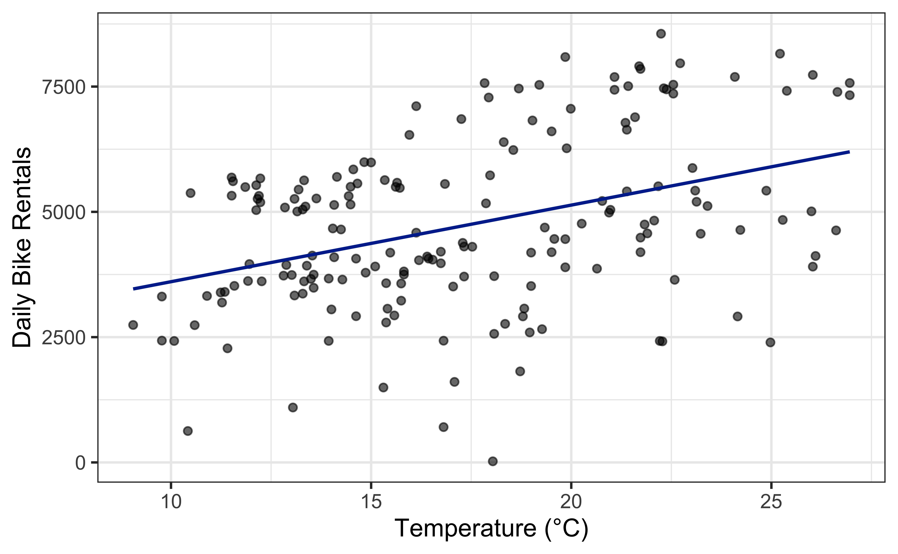
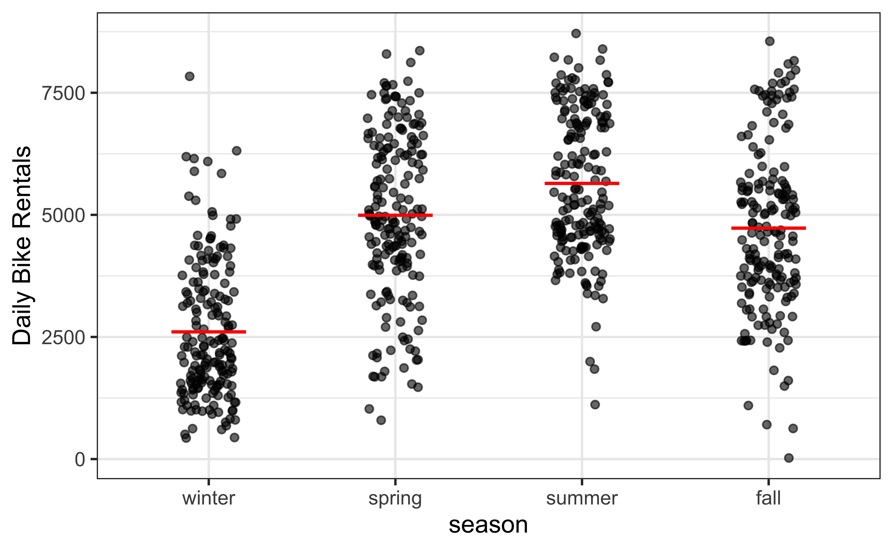

Categorical Predictors
Prof. Eric Friedlander
Topics
- Use regression to describe the relationship between a categorical predictor and a quantitative response variable.
- Understand indicator (dummy) variables and reference levels.
- Interpret the intercept and slope when the predictor is categorical.
Last time
Last time
Fit
lm(count ~ temp_orig)for our bikeshare dataInterpreted the slope and intercept
Used
predict()to make predictionsEvery predictor so far has been a number
::: :::{.column}
What if the predictor isn’t a number?
- We also have
season: winter, spring, summer, fall. - What would
lm(count ~ season)even mean?
- You can’t multiply “fall” by a slope. So what does \(\hat{\beta}_1\) look like when \(X\) is a category?
- Can we still write \(\hat{Y} = \hat{\beta}_0 + \hat{\beta}_1 X\)?
Meet the Coffee Truck
The scenario
Jo inherited a coffee truck from an uncle. After repairs, Jo has $20,000 left. Coffee costs $0.50/cup to make, and fixed daily expenses are $300/day. Jo wants help figuring out what combination of settings sells the most coffee.
We’ll use the Coffee Truck game (Grinnell stat2games) to generate our own data by playing simulated shifts.
Settings you can choose
Before each shift you pick a combination of:
| Setting | Options in the game |
|---|---|
| Location | Business District, City Park, City Hall, Near the Zoo |
| Music | No Music, Hip Hop, Alternative |
| Price | $2, $3, $4, $5 per cup |
| Time | Morning, Lunch, Afternoon, Evening |
| Weather | Relatively Constant, Variable |
Response variable: Sales – the number of cups sold that shift.
Our baseline
Everyone in class will start from the same baseline:
Business District, No Music, $3 per cup, Lunch
Each group then picks one setting to change to a second level, holding everything else at the baseline. (If there’s time, we’ll add a third level of that same setting later.)
- I’m doing Location (Business District vs. City Park); your group picks one other setting to change
- Complete Exercises 1-7
Regression with one categorical predictor
We’re just encoding means
What comes next may seem complicated, but we’re just building a model that predicts the groups means:
Indicator variables
- Suppose a categorical variable has \(K\) categories (levels).
- We can make \(K\) indicator variables, one per category.
- An indicator variable takes the value 1 or 0:
- 1 if the observation belongs to that category
- 0 if it does not
- Finally… we drop one of the indicator variables.
- This category is called the reference level (or baseline) and it doesn’t get its own term in the model
Example
Create indicator variables for Season in our bikeshare data:
| season | winter | spring | summer | fall |
|---|---|---|---|---|
| summer | 0 | 0 | 1 | 0 |
| summer | 0 | 0 | 1 | 0 |
| summer | 0 | 0 | 1 | 0 |
| fall | 0 | 0 | 0 | 1 |
| summer | 0 | 0 | 1 | 0 |
| summer | 0 | 0 | 1 | 0 |
| winter | 1 | 0 | 0 | 0 |
| spring | 0 | 1 | 0 | 0 |
Set winter as the reference level, and drop it from the model:
| season | spring | summer | fall |
|---|---|---|---|
| summer | 0 | 1 | 0 |
| summer | 0 | 1 | 0 |
| summer | 0 | 1 | 0 |
| fall | 0 | 0 | 1 |
| summer | 0 | 1 | 0 |
| summer | 0 | 1 | 0 |
| winter | 0 | 0 | 0 |
| spring | 1 | 0 | 0 |
Indicators in the model
- We only use \(K - 1\) of the indicator variables in the model.
- The reference level (or baseline) is the category left out — it doesn’t get its own term.
- The coefficient on each indicator is the expected difference in the response compared to the baseline.
- This is called dummy coding, and R does it for you.
- But why… (Board work)
R’s default reference level
By default, R picks the reference level either alphabetically (if variable is not a factor) or the first level (if variable is a factor).
Most of the time, you probably don’t care which level is chosen to be the reference level (you need to know which one it is though)… but if you do chage it using the same trick from season in Lecture 3:
Fitting the model

\[ \widehat{\text{count}} = \hat\beta_0 + \hat\beta_1 \times \text{seasonspring} + \hat\beta_2 \times \text{seasonsummer} + \hat\beta_3 \times \text{seasonfall} \]
- Where can we figure out what the reference level is from the output?
- Where do you see the intercept and slope in the plot?
- What does this model predict for a winter day? A summer day?
The intercept is a mean; the slope is a difference
- Intercept: we predict a winter (baseline) day to have \(\hat\beta_0\) rentals, on average — this is the winter mean.
- Slope: switching to summer, we expect \(\hat\beta_1\) more rentals, on average, compared to winter — this is the difference between the two means.
“A one-unit increase in \(X\)” now means “switching from the baseline category to this one.”
(Trick question)
Are season and count correlated?
- Correlation only makes sense for two quantitative variables.
seasonis categorical — there’s no correlation coefficient to compute, even though we can absolutely fit a regression model.
Complete Exercises 6-13.
If time permits, complete Exercises 14-15.
Wrap up
Recap
Regression works with a categorical predictor \(X\), just like a quantitative one.
R recodes a \(K\)-level categorical variable into \(K - 1\) indicator (dummy) variables.
The left-out category is the reference level; by default R picks it alphabetically, but we can set it with
factor(x, levels = ...).The intercept is the mean of the response at the reference level.
Each slope is the difference in means between that level and the reference level.
Correlation doesn’t apply to categorical predictors, but regression still does.
:::